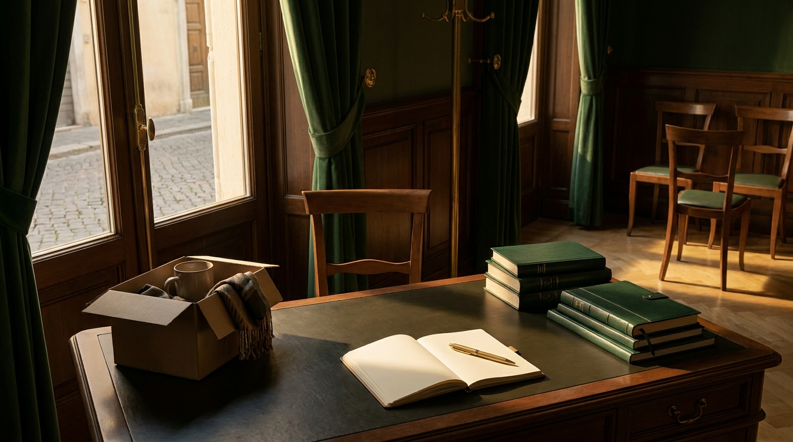

Calo di mansioni e mobbing: quando scatta la tutela del lavoratore
La riduzione delle mansioni di un dipendente non è automaticamente mobbing. Può configurare un demansionamento, illegittimo se non giustificato, oppure rientrare in scelte organizzative lecite. Il mobbing richiede invece la prova di un disegno persecutorio reiterato. Comprendere la differenza è decisivo: cambiano l'onere probatorio a carico del lavoratore e il tipo di risarcimento ottenibile.

Demansionamento e mobbing non sono la stessa cosa
Un calo di mansioni viene spesso vissuto come una persecuzione. Sul piano giuridico, però, la riduzione del contenuto professionale della prestazione e il mobbing sono fattispecie distinte, con presupposti e tutele diversi.
Il demansionamento riguarda la legittimità dell'assegnazione di mansioni inferiori o impoverite rispetto a quelle di assunzione o successivamente acquisite. Il mobbing è invece una condotta vessatoria sistematica, diretta a emarginare il lavoratore. Le due ipotesi possono coesistere, ma non si presuppongono a vicenda: si può avere demansionamento senza mobbing, e il primo è risarcibile anche in assenza del secondo.
L'inquadramento normativo: artt. 2103 e 2087 c.c.
La disciplina delle mansioni è contenuta nell'art. 2103 c.c., riformato dal D.lgs. n. 81/2015. La norma consente al datore di lavoro di adibire il dipendente a mansioni riconducibili allo stesso livello e categoria legale di inquadramento delle ultime svolte.
La riforma del 2015 ha introdotto una flessibilità ulteriore: in caso di modifica degli assetti organizzativi aziendali che incida sulla posizione del lavoratore, il datore può assegnare mansioni appartenenti al livello di inquadramento inferiore, purché rientranti nella medesima categoria legale e con conservazione del livello retributivo maturato. Non è quindi corretto affermare che lo spostamento debba sempre avvenire a parità di livello: la legge ammette il cosiddetto demansionamento legittimo entro condizioni precise.
Il mobbing trova invece fondamento nell'art. 2087 c.c., che impone al datore di tutelare l'integrità fisica e la personalità morale dei lavoratori. La giurisprudenza ne ha costruito i contorni in via interpretativa, in assenza di una definizione legislativa specifica.
I parametri del mobbing secondo la giurisprudenza
La Cassazione richiede la presenza di una serie di elementi convergenti. La pronuncia di riferimento (Cass., sez. lavoro, n. 17698/2014) individua i parametri che il lavoratore deve provare:
- una pluralità di condotte ostili, reiterate nel tempo;
- l'evento lesivo della salute, della personalità o della dignità del dipendente;
- il nesso causale tra le condotte e il pregiudizio;
- soprattutto, l'intento persecutorio che unifica i comportamenti in un disegno unitario.
Quest'ultimo è l'elemento più difficile da dimostrare. Non basta una pluralità di episodi sfavorevoli: occorre provare che siano espressione di una volontà di emarginare il lavoratore. Per questo motivo, un calo di mansioni giustificato da riorganizzazioni aziendali o innovazioni tecnologiche, di per sé, non integra mobbing.
La giurisprudenza di legittimità è costante nel distinguere il mero inadempimento contrattuale dalla condotta persecutoria (in tema, tra le altre, Cass. n. 3291/2016).
La doppia tutela per il lavoratore
Il punto pratico è il seguente: anche quando l'intento persecutorio non è dimostrabile, il lavoratore non resta privo di protezione. Il demansionamento illegittimo è autonomamente risarcibile, perché lede il diritto alla professionalità e può determinare un danno patrimoniale (perdita di chance, dequalificazione) e non patrimoniale (danno alla salute, all'immagine professionale).
La qualificazione della fattispecie — demansionamento oppure mobbing — incide direttamente sull'onere probatorio richiesto e sul tipo di risarcimento ottenibile. Provare il mobbing è più gravoso; far valere il demansionamento è spesso più agevole, perché si concentra sulla legittimità dell'assegnazione e non sull'intenzione del datore.
Cosa fare in concreto
- Documenta ogni variazione delle mansioni: ordini di servizio, e-mail, organigrammi, comunicazioni interne. La prova scritta è decisiva.
- Confronta le mansioni attuali con il livello e la categoria di inquadramento contrattuale, verificando se rientrano nella medesima categoria legale.
- Conserva la documentazione sanitaria in caso di ripercussioni sulla salute, perché collega la condotta al pregiudizio.
- Annota date, frequenza e contesto degli episodi, distinguendo l'eventuale carattere sistematico da scelte organizzative isolate.
- Verifica i termini: il diritto a reagire e a richiedere il risarcimento è soggetto a limiti temporali che variano secondo la natura della pretesa.
La corretta qualificazione giuridica della situazione richiede una valutazione caso per caso degli elementi raccolti.
Disclaimer
Contributo informativo a cura di Tamburro & Partners Avvocati. Non costituisce parere legale.
Ogni storia di lavoro ha i suoi tempi.
Se gestisci HR e vuoi un confronto su contenzioso, ispezioni o licenziamenti, scrivi allo studio. Ti rispondiamo entro un giorno lavorativo.